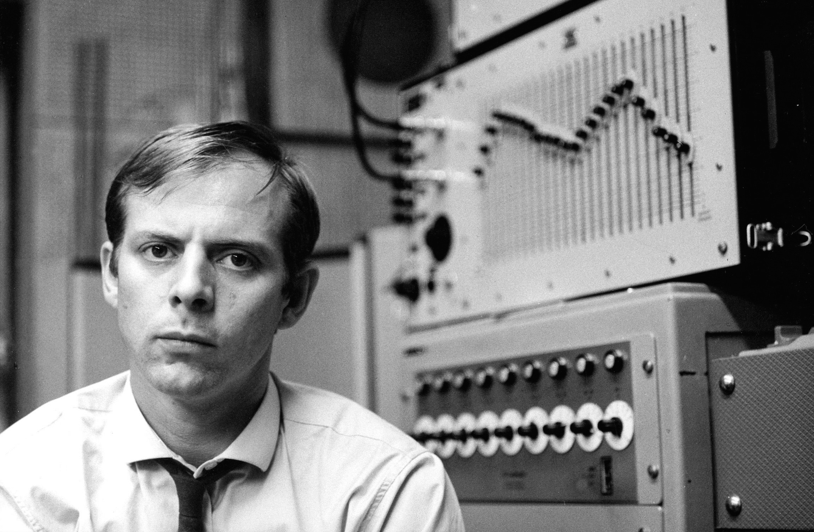

Karlheinz Stockhausen was a German composer who pioneered electronic music and influenced 20th and 21st century art music to a considerable degree. Stockhausen was born in the village of Mödrath in 1928. He took piano lessons throughout his childhood and also learned oboe and violin in school. After conscription in WWII, Stockhausen attended university in Cologne and in 1950 developed an interest in music composition. In 1952 Stockhausen moved to Paris to study with Olivier Messiaen until 1953. After concluding his studies, Stockhausen moved back to Cologne and joined the Electronic Music Studio of West German Broadcasting(Westdeutscher Rundfunk) where he would become the artistic director in 1963. While at the WDR, Stockhausen started composing in a serial style that was distinct from Schoenberg’s 12-tone technique. He took Schoenberg’s atonal techniques and applied them to other aspects of music such as rhythm and instrumentation. In the 1960s Stockhausen incorporated vocal music into his composition and composed many works for conventional classical ensembles but also for unconventional instruments/groupings (eg. Mikrophonie II for choir, Hammond organ, and four ring modulators. In the 70s Stockhausen developed a simpler serialist style known as “Formula Music” in which he manipulated melodic and/or contrapuntal lines known as formulas. Starting in the late 1970s Stockhausen began work on a high-concept opera cycle called Licht: Die sieben Tage der Woche (Light: The Seven Days of the Week) which made references to Noh Theater, Judeo-Christian, and Vedic religion. A scene from one of these operas is one of Stockhausen’s most famous pieces: Helikopter-Streichquartett which is a string quartet performed in four separate helicopters and broadcasted to the nearby concert hall. Stockhausen was one of the most influential avant-garde composers associated with the classical tradition in the 20th century, and his influence reached further than just those circles. Numerous artists more oriented towards the pop and rock scenes of the 1960s and 70s, including Frank Zappa, The Who, Pink Floyd, and The Beatles cited his music as inspiration for their own.
